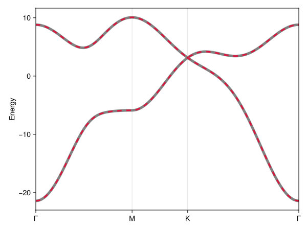
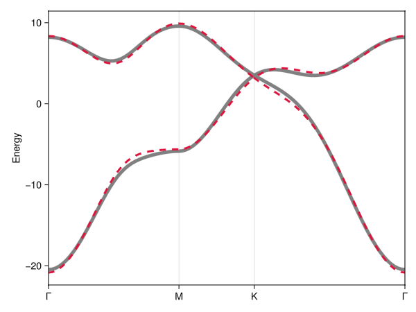
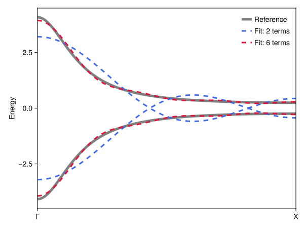
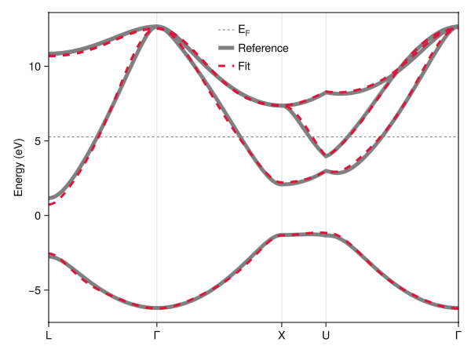
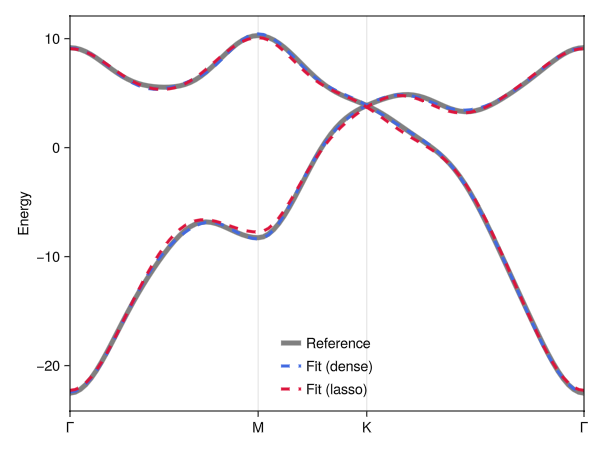

Fitting models to band structures
A common task is to determine the hopping amplitudes of a symmetry-constrained tight-binding model so that its bands reproduce a reference band structure – e.g., one obtained from a first-principles (DFT) calculation, an experiment, or a classical physics calculation to which a mapping is sought (e.g., photonic or acoustic crystals). SymmetricTightBinding.jl provides the fit function for this purpose, as an Optim.jl extension.
fit is implemented as a package extension and only becomes available once Optim.jl is loaded (using Optim).
Because tb_hamiltonian already fixes the form of every allowed Hamiltonian term (enforcing spatial symmetry, time-reversal, and hermiticity), fitting only has to determine a handful of real amplitudes – one per symmetry-distinct hopping term. This makes the problem low-dimensional and the resulting model automatically symmetry-consistent, regardless of how noisy or incomplete the reference data is.
A synthetic reference
To demonstrate the workflow, we generate a synthetic "reference" band structure from a known set of amplitudes and then try to recover it – pretending, for the moment, that we only have the band energies. (In a real application, the reference energies might instead come from DFT, experiment, or some other wave-equation calculation.)
We base the model on graphene: the (2b|A₁) elementary band representation of plane group 17 (p6mm), with nearest- and next-nearest-neighbor hopping:
using Crystalline, SymmetricTightBinding
sgnum = 17
brs = calc_bandreps(sgnum, Val(2))
cbr = @composite brs[5] # (2b|A₁)
tbm = tb_hamiltonian(cbr, [[0, 0], [1, 0], [1, 1]]) # on-site, NN, NNN5-term 2×2 TightBindingModel{2} (hermitian) over (2b|A₁):
┌─
1. ⎡ 1 0 ⎤
│ ⎣ 0 1 ⎦
└─ (2b|A₁) self-term
┌─
2. ⎡ 0 𝕖(-δ₁)+𝕖(-δ₂)+𝕖(-δ₃) ⎤
│ ⎣ 𝕖(δ₁)+𝕖(δ₂)+𝕖(δ₃) 0 ⎦
└─ (2b|A₁) self-term: δ₁=[1/3,-1/3], δ₂=[1/3,2/3], δ₃=[-2/3,-1/3]
┌─
3. ⎡ 𝕖(δ₁)+𝕖(δ₂)+𝕖(δ₃)+𝕖(-δ₁)+𝕖(-δ₂)+𝕖(-δ₃) … 0 ⎤
│ ⎣ 0 𝕖(δ₁)+𝕖(δ₂)+𝕖(δ₃)+𝕖(-δ₁)+𝕖(-δ₂)+𝕖(-δ₃) ⎦
└─ (2b|A₁) self-term: δ₁=[-1,0], δ₂=[0,-1], δ₃=[1,1]
┌─
4. ⎡ 0 … 𝕖(δ₁)+𝕖(δ₂)+𝕖(δ₃)+𝕖(δ₇)+𝕖(δ₈)+𝕖(δ₉) ⎤
│ ⎣ 𝕖(-δ₁)+𝕖(-δ₂)+𝕖(-δ₃)+𝕖(-δ₇)+𝕖(-δ₈)+𝕖(-δ₉) 0 ⎦
└─ (2b|A₁) self-term: δ₁=[-4/3,1/3], δ₂=[-1/3,-5/3], δ₃=[5/3,4/3], δ₇=[-1/3,4/3], δ₈=[5/3,1/3], δ₉=[-4/3,-5/3]
┌─
5. ⎡ 0 𝕖(-δ₁)+𝕖(-δ₂)+𝕖(-δ₃) ⎤
│ ⎣ 𝕖(δ₁)+𝕖(δ₂)+𝕖(δ₃) 0 ⎦
└─ (2b|A₁) self-term: δ₁=[-2/3,-4/3], δ₂=[4/3,2/3], δ₃=[-2/3,2/3]Next, we pick a set of "ground-truth" amplitudes and evaluate the associated band structure along a high-symmetry k-path, using Brillouin.jl. This spectrum will play the role of our reference data:
using Brillouin
Rs = directbasis(sgnum, Val(2))
kpi = interpolate(irrfbz_path(sgnum, Rs), 100)
using Random
Random.seed!(2)
cs_ref = randn(length(tbm)) # ground-truth amplitudes (unknown to the fit)
ptbm_ref = tbm(cs_ref)
Em_ref = spectrum(ptbm_ref, kpi) # reference energies: a (100 × 2) matrixThe reference energies Em_ref[i, n] give the energy of band n at the ith k-point, with bands sorted in ascending energy – the format fit expects.
Fitting
With the model and the reference in hand, fitting is a single call:
using Optim # invoke to load extension
ptbm_fit = fit(tbm, Em_ref, kpi)5-term 2×2 ParameterizedTightBindingModel{2} (hermitian) over (2b|A₁) with amplitudes:
[-0.0057372, 1.7354, -1.0499, 0.57537, -0.36739]The returned ParameterizedTightBindingModel carries the fitted amplitudes. In this simple example, we can expect near-exact recovery of the original amplitudes:
using LinearAlgebra: norm
norm(ptbm_ref.cs - ptbm_fit.cs)9.627715291671279e-17We can confirm the recovery visually by overlaying the fitted bands (crimson, dashed) on the reference band structure (gray, solid):
using GLMakie
Em_fit = spectrum(ptbm_fit, kpi)
plot(
kpi, Em_ref, Em_fit;
color = [:gray, :crimson], linestyle = [nothing, :dash], linewidth = [5, 3]
)
Fitting to non-exactly representable data
Real band structures are usually never exactly mappable to finite-range tight-binding models. To emulate this, we can create a model with a few small long-range hopping terms and then attempt to fit its spectrum to a shorter-range model. Because the model form is symmetry-constrained, the fit remains rather good and simply returns a spectrally close symmetry-consistent model (in a least-squares sense).
tbm_long = tb_hamiltonian(cbr, [[0, 0], [1, 0], [1, 1], [1,2], [2,2]]) # terms 6-8 are additional to onsite+NN+NNN
Random.seed!(2)
ptbm_long_ref = tbm_long(vcat(randn(5), randn(length(tbm_long)-5)*.05)) # small amplitudes in last three terms
Em_long_ref = spectrum(ptbm_long_ref, kpi)
ptbm_short_fit = fit(tbm, Em_long_ref, kpi) # fit to 5-term "short-range" model (onsite, NN, NNN)
Em_short_fit = spectrum(ptbm_short_fit, kpi)
plot(
kpi, Em_long_ref, Em_short_fit;
color = [:gray, :crimson], linestyle = [nothing, :dash], linewidth = [5, 3]
)
The fitted hopping amplitudes of the short-range model are in rough agreement with the ground-truth amplitudes of the long-range model, but not exact. The deviation is primarily a result of the short-range amplitudes compensating for the absence of longer-range terms.
hopping_scale = sum(abs, ptbm_long_ref.cs[1:5]) / 5
(ptbm_short_fit.cs - ptbm_long_ref.cs[1:5]) ./ hopping_scale * 100 # relative deviation (%)5-element Vector{Float64}:
6.351569991418576
1.871861943261684
0.41624020413958807
-7.085154173520296
0.6701952565280086An infinite-range reference
The example above is still representable in principle – the reference merely has more terms than the fitting model. A sharper test is a reference that no finite-range model can represent. Consider a 1D chain with two orbitals per site, coupled across every distance with an exponentially decaying amplitude $t_n = t_0 e^{-\gamma n}$. Summing the geometric series gives a closed-form Bloch Hamiltonian, $H(k) = f(k)\sigma_x$, and hence exact bands $\pm f(k)$:
brs_1d = calc_bandreps(2, Val(1)) # 1D space group 2
cbr_1d = @composite brs_1d[1] + brs_1d[1] # two orbitals per site
tₙ(n, γ = 0.5, t₀ = 1.0) = t₀ * exp(-γ * abs(n)) # hopping amplitude across n cells
f(k, γ = 0.5, t₀ = 1.0) = t₀ * (1 - exp(-2γ)) / (1 - 2exp(-γ) * cospi(2k) + exp(-2γ)) # = ∑ₙ tₙ exp(i2πnk)
kpi_1d = interpolate(irrfbz_path(2, directbasis(2, Val(1))), 100)
Em_1d = (v = f.(only.(kpi_1d)); [-v v])We now fit truncations of this chain, keeping hoppings only out to nmax cells. tb_hamiltonian orders its terms block-major, so the two intra-orbital blocks come first and the inter-orbital couplings last; slicing off the former leaves exactly the terms of the model above:
function truncated_chain(nmax)
tbm = tb_hamiltonian(cbr_1d, [[n] for n in 0:nmax])
return tbm[2(nmax + 1) + 1 : end] # keep only the inter-orbital couplings
end
ptbm_2 = fit(truncated_chain(2), Em_1d, kpi_1d)
ptbm_6 = fit(truncated_chain(6), Em_1d, kpi_1d)
faxp = plot(
kpi_1d, Em_1d, spectrum(ptbm_2, kpi_1d), spectrum(ptbm_6, kpi_1d);
color = [:gray, :royalblue, :crimson],
linestyle = [nothing, :dash, :dash], linewidth = [5, 3, 3],
label = ["Reference", "Fit: 2 terms", "Fit: 6 terms"]
)
axislegend(; framevisible=false)
Two cells (blue) are too short-ranged to resolve the sharp peak of $f$ at Γ, and the bands acquire spurious oscillations – and even a spurious touching – across the rest of the zone. Six cells (crimson) already track the exact bands closely. Notably, the fit is never told that the amplitudes decay exponentially, yet recovers $t_n = t_0e^{-\gamma n}$ to three digits:
round.([ptbm_6.cs tₙ.(0:6)]; sigdigits = 3) # fitted amplitudes vs. exact tₙ7×2 Matrix{Float64}:
1.0 1.0
0.607 0.607
0.368 0.368
0.224 0.223
0.136 0.135
0.083 0.0821
0.0503 0.0498An example with real data
As a demonstration on non-synthetic data, we fit the band structure of face-centered cubic lead (Pb) near the Fermi level, using the reference data of Wannier90's tutorial 2 (four bands along L–Γ–X–U–Γ, digitized from its lead.pdf example). Full details in the fold-out below.
Example: the band structure of lead
The four bands associate with an sp³ orbital set at the 4a Wyckoff position of space group 225 (Fm-3m), which, in the EBR language corresponds to the (4a|A₁g) ⊕ (4a|T₁ᵤ) band representations:
sgnum = 225
brs_pb = calc_bandreps(sgnum, Val(3))
cbr_pb = @composite brs_pb[end-9] + brs_pb[end-2] # (4a|A₁g) ⊕ (4a|T₁ᵤ)31-irrep Crystalline.CompositeBandRep{3}:
(4a|A₁g) + (4a|T₁ᵤ) (4 bands)Next, we load the reference band structure data from a stored .dat file:
using DelimitedFiles
Em_pb = readdlm(joinpath(pkgdir(SymmetricTightBinding), "docs", "src", "assets",
"lead-wannier90-bands.dat"), Float64; comments = true)
size(Em_pb) # 379 k-points × 4 bands (eV)(379, 4)The corresponding reference k-path is a uniform sampling of the L–Γ–X–U–Γ path, which we reconstruct manually:
using Crystalline: SVector
points = Dict(:Γ => SVector(0.0, 0, 0), :L => SVector(0.5, 0.5, 0.5),
:X => SVector(0.5, 0, 0.5), :U => SVector(0.625, 0.25, 0.625))
labels = Dict(1 => :L, 101 => :Γ, 216 => :X, 257 => :U, 379 => :Γ)
kpaths = vcat(range(points[:L], points[:Γ], 101-1+1)[1:end-1],
range(points[:Γ], points[:X], 216-101+1)[1:end-1],
range(points[:X], points[:U], 257-216+1)[1:end-1],
range(points[:U], points[:Γ], 379-257+1)[1:end])
Gs = primitivize(dualbasis(directbasis(sgnum, Val(3))), centering(sgnum, 3)) # recip. lattice
kpi_pb = KPathInterpolant([kpaths], [labels], Gs, Ref(Brillouin.LATTICE))We then build a model with hoppings along the [100] direction out to two cells. Of the resulting 12 terms, 3 carry negligible amplitude (identified by a lasso-penalized trial fit) and are dropped. Finally, we fit the model to the reference data and compare the fit and reference visually:
tbm_pb_full = tb_hamiltonian(cbr_pb, [[0,0,0], [1,0,0], [2,0,0]])
tbm_pb = tbm_pb_full[[1:6..., 8, 9, 11]] # drop neglible terms
Random.seed!(1)
ptbm_pb = fit(tbm_pb, Em_pb, kpi_pb; max_multistarts = 50)9-term 4×4 ParameterizedTightBindingModel{3} (hermitian) over (4a|A₁g)⊕(4a|T₁ᵤ) with amplitudes:
[-2.233, -0.30622, -0.026688, 6.642, 0.64495, 0.41461, 0.09138, 0.067655, 0.46609]E_F = 5.27 # Fermi level (eV)
faxp = plot(
kpi_pb, fill(E_F, length(kpi_pb), 1), Em_pb, spectrum(ptbm_pb, kpi_pb);
ylabel = "Energy (eV)", label = [rich("E", subscript("F")), "Reference", "Fit"],
color = [:gray50, :gray, :crimson], linewidth = [1, 5, 3],
linestyle = [:dash, nothing, :dash]
)
axislegend(; framevisible = false, position = (:center, :top))
The agreement is good across the entire k-path, even with just 9 amplitudes. It must be noted, however, that the reference data is itself Wannier-interpolated, i.e., is effectively already a (long-ranged) tight-binding model: a genuinely ab initio reference would in general be harder to fit this readily, mainly due to the difficulty of first obtaining a set of spectrally isolated bands.
Choosing the number of terms
The set of hopping ranges passed to tb_hamiltonian determines how many free amplitudes the fit has to work with. Too few, and the model cannot represent the reference; too many, and one runs the risk of overfitting (and, in addition, a more challenging fitting convergence due to a preponderance of local minima). A useful diagnostic is to fit models of increasing range and monitor the residual error:
Em_fits = Matrix{Float64}[]
for range in ([[0, 0]], [[0, 0], [1, 0]], [[0, 0], [1, 0], [1, 1]])
tbm_range = tb_hamiltonian(cbr, range)
ptbm_range_fit = fit(tbm_range, Em_ref, kpi)
Em_fit = spectrum(ptbm_range_fit, kpi)
rms = norm(Em_fit - Em_ref) / sqrt(length(Em_ref))
println("$(length(tbm_range)) terms: RMS error = ", round(rms; sigdigits = 3))
end┌ Warning: Assignment to `Em_fit` in soft scope is ambiguous because a global variable by the same name exists: `Em_fit` will be treated as a new local. Disambiguate by using `local Em_fit` to suppress this warning or `global Em_fit` to assign to the existing global variable.
└ @ fitting.md:215
2 terms: RMS error = 4.06
4 terms: RMS error = 1.24
5 terms: RMS error = 2.32e-16Here the reference was generated with next-nearest-neighbor hopping, so the error drops sharply once the model includes terms in the [1, 1] range and only then reaches (numerical) zero.
Sparsity-encouraged fitting
If we want to encourage sparsity – letting the fit decide which longer-range terms are actually (or merely primarily) needed – we can set the lasso keyword to a positive value $\lambda$. This adds an $\ell_1$ penalty $\lambda\sum_i|c_i|$ to the loss, which shrinks weakly-supported amplitudes and, when successful, drives them to zero outright.
The setting this targets is the one described above: data produced by something other than a tight-binding model – a DFT or other wave-equation calculation – for which no finite-range parameterization is exact. There are then no "true" amplitudes to recover, and the goal shifts to finding the simplest model that still tracks the data closely. Since we cannot know in advance how many hopping ranges the data will support, the practical approach is to include generously many and let the penalty prune those that do not earn their place.
Example: pruning an over-specified model
As a synthetic stand-in for such data, we generate a reference from a 20-term model whose five leading amplitudes are $\mathcal{O}(1)$ and whose remaining fifteen form a small, long-ranged tail. We then fit it with a 15-term model: fewer terms than the reference, but still far more than we would like to end up with.
Rs_20 = [[0,0], [1,0], [1,1], [1,2], [2,2], [0,3], [1,3], [2,3], [3,3], [1,4], [2,4]]
tbm_20 = tb_hamiltonian(cbr, Rs_20) # reference model
tbm_15 = tb_hamiltonian(cbr, Rs_20[1:8]) # fitting model
(length(tbm_20), length(tbm_15))(20, 15)Random.seed!(2)
cs_20 = vcat(randn(5), 0.08 .* randn(length(tbm_20)-5) .* [0.9^i for i in 1:length(tbm_20)-5])
Em_20 = spectrum(tbm_20(cs_20), kpi)Fitting the 15-term model twice, with and without the penalty:
Random.seed!(3)
ptbm_dense = fit(tbm_15, Em_20, kpi) # unpenalized
ptbm_lasso = fit(tbm_15, Em_20, kpi; lasso = 1.0) # ℓ₁-penalized
round.([ptbm_dense.cs ptbm_lasso.cs]; digits = 3) # amplitudes, side by side15×2 Matrix{Float64}:
-0.012 0.0
1.832 1.706
-1.048 -1.018
0.211 0.564
-0.105 -0.328
0.088 0.047
0.263 0.0
-0.146 -0.127
-0.024 -0.0
0.049 0.05
0.169 0.07
0.012 -0.0
-0.055 -0.065
-0.303 -0.003
-0.069 0.0The unpenalized fit puts amplitude on every term available to it, while the penalized fit switches a third of them off entirely:
(dense = count(>(1e-3), abs.(ptbm_dense.cs)),
lasso = count(>(1e-3), abs.(ptbm_lasso.cs)))(dense = 15, lasso = 10)The spectral price for this is modest – measured as an RMS energy error relative to the bandwidth of the reference bands:
bandwidth = maximum(Em_20) - minimum(Em_20)
rel_rms(ptbm) = 100norm(spectrum(ptbm, kpi) - Em_20) / sqrt(length(Em_20)) / bandwidth
(dense = round(rel_rms(ptbm_dense); sigdigits = 2), # RMS error, % of bandwidth
lasso = round(rel_rms(ptbm_lasso); sigdigits = 2))(dense = 0.3, lasso = 0.78)Both models track the reference to well under 1% of its bandwidth, so the sparser one is arguably the better answer: it is very nearly as faithful, but involves only two thirds as many hopping terms. A visual comparison is instructive also:
faxp = plot(
kpi, Em_20, spectrum(ptbm_dense, kpi), spectrum(ptbm_lasso, kpi),
color = [:gray, :royalblue, :crimson],
linestyle = [nothing, :dash, :dash], linewidth = [5, 3, 3],
label = ["Reference", "Fit (dense)", "Fit (lasso)"]
)
axislegend(; framevisible = false, position = :cb)
The Lasso penalty's sparsifying tendency is not systematic. Whether a given term is driven to zero depends on $\lambda$, on the model, and on which local minimum the search happens to settle in – and the number of surviving terms need not even decrease monotonically with $\lambda$. Treat lasso as a knob worth exploring rather than a dependable model-selection procedure.
Under the hood
fit performs a moment-seeded, basin-hopping multi-start minimization of a sorted-eigenvalue least-squares loss:
- the loss landscape of band-fitting problems is funnel-like, with hierarchies of progressively better band-assignment local minima, so the search perturbs the incumbent best fit ("hops") far more often than it restarts from scratch;
- the deterministic first trial, and the occasional fresh restarts, are seeded using the reference spectrum's first two moments (exploiting the linearity $H(\mathbf{k}) = \sum_i c_i h_i(\mathbf{k})$ for cheap, sorting-free handles on the coefficient scale);
- second-order optimizers use a Gauss–Newton approximation of the Hessian, $\nabla^2 F \approx 2\sum_{\mathbf{k}, n} \nabla E_n \nabla E_n^\top$, so the default
NewtonTrustRegion()acts as a Levenberg–Marquardt least-squares solver.
The search engine is exposed separately as multistart_fit, which minimizes any Optim.jl objective (built with make_fit_objective) against a moment structure. This lets related fitting problems with custom losses – for example photonic band-fitting, which penalizes longitudinal modes differently – reuse the same machinery.
For workloads that evaluate the same model over the same k-points many times with varying amplitudes (fitting, above all), the coefficient-independent term matrices $h_i(\mathbf{k})$ are tabulated once up front in a TightBindingCache; fit builds and shares one internally.
Fitting API
SymmetricTightBinding.fit — Function
fit(tbm::TightBindingModel{D},
Em_r::AbstractMatrix{<:Real},
ks::AbstractVector{<:ReciprocalPointLike{D}},
kws...) --> ParameterizedTightBindingModel{D}Fit the hopping amplitudes of a tight-binding model tbm to the reference energies Em_r, assumed sampled over k-points ks. Em_r[i,n] denotes the band energy at ks[i] in band n (and bands are assumed energetically sorted).
Fitting is performed using a local optimizer (configurable via optimizer from Optim.jl) with mean-squared error loss. The local optimizer is used as a basis for a "multi-start" global optimization, combining moment-seeded starts with basin-hopping exploration: the first trial starts from the least-squares solution of the (linear) first-moment (trace) equations; most subsequent trials perturb the incumbent best fit ("hops"), with amplitudes that grow under stagnation, interspersed with fresh random restarts whose magnitudes are chosen to reproduce the reference spectrum's second moment. The global search returns early if the mean fit error, per band and per k-point, is less than atol.
The function is defined as an Optim.jl extension to SymmetricTightBinding.jl: i.e., Optim.jl must be explicitly loaded to use this function.
Keyword arguments
optimizer(default,Optim.NewtonTrustRegion()): a local optimizer from Optim.jl. First-order optimizers exploit the analytic (Feynman–Hellmann) gradient of the loss; second-order optimizers (e.g.,Newton(),NewtonTrustRegion()) additionally exploit a Gauss–Newton approximation of its Hessian,∇²F ≈ 2∑ₖ∑ₙ ∇Eₙ∇Eₙᵀ, and thereby act as Gauss–Newton (line-search) or Levenberg–Marquardt-like (trust-region) least-squares solvers.max_multistarts(default,max(100, 25length(tbm))): maximum number of multi-start trials; scales with the number of hopping terms, since higher-dimensional models require more exploration.restart_every(default,4): everyrestart_everyth multi-start trial is a fresh moment-scaled restart rather than a basin-hopping perturbation of the incumbent best (see above). Set to e.g.typemax(Int)to disable fresh restarts entirely (pure basin hopping).atol(default,1e-3): threshold for early return, specifying the mean energetic error (averaged over bands and k-points) below which the search stops.verbose(default,false): whether to print information on optimization progress.options(default,Optim.Options(g_abstol=1e-2, f_reltol=1e-5)): anOptim.Options(…)structure of optimization options, used during the local optimization of the multi-start search. The default is deliberately loose, suiting the low-precision demands of the multi-start search.polish(default,true): whether to polish off the multi-start optimization with a final local optimization step using default Optim.jl options. This is useful to ensure that the best candidate from the multi-start search is fully converged.lasso(default,nothing): if set to a positive number, applies a LASSO penalty to the hopping amplitudes, encouraging model sparsity (i.e., encouraging small hopping amplitudes to vanish). Setting tonothingdisables the LASSO penalty.init(default,nothing): if provided, a vector of hopping amplitudes used as the deterministic first multi-start trial, replacing the first-moment (trace) fit.
Example
As a synthetic example, we might use fit to recover the coefficients of a randomly parameterized tight-binding model, using its spectrum sampled over 10 k-points:
julia> using Crystalline, SymmetricTightBinding, Brillouin, Optim, Random
julia> sgnum = 221;
julia> brs = calc_bandreps(sgnum);
julia> cbr = @composite brs[1] + brs[7];
julia> tbm = tb_hamiltonian(cbr);
julia> Random.seed!(123);
julia> ptbm_r = tbm(randn(length(tbm)))
4-term 6×6 ParameterizedTightBindingModel{3} (hermitian) over (3d|A₁g)⊕(3d|B₂g) with amplitudes:
[-0.64573, -1.4633, -1.6236, -0.21767]
julia> kp = irrfbz_path(sgnum, directbasis(sgnum, Val(3)));
julia> ks = interpolate(kp, 10);
julia> Em_r = spectrum(ptbm_r, ks);
julia> ptbm_fit = fit(tbm, Em_r, ks)
4-term 6×6 ParameterizedTightBindingModel{3} (hermitian) over (3d|A₁g)⊕(3d|B₂g) with amplitudes:
[-0.64573, -1.4633, -1.6236, -0.21767]
julia> ptbm_fit.cs ≈ ptbm_r.cs
trueSymmetricTightBinding.multistart_fit — Function
multistart_fit(obj, moments::SpectralMoments; kws...) --> (best_cs, best_loss)Moment-seeded, basin-hopping multi-start minimization of an Optim.jl objective obj (e.g., constructed via make_fit_objective), with exploration draws derived from moments (cf. SpectralMoments). This is the search engine underlying fit, factored out so that related fitting problems with custom losses (e.g., PhotonicTightBinding.jl) can reuse it.
The search strategy is informed by the loss-landscape geometry typical of (sorted- eigenvalue, least-squares) band-fitting problems: the landscape is funnel-like, with hierarchies of progressively better band-assignment local minima, so that local exploration around the incumbent best is far more effective than independent restarts. Concretely:
- the first trial starts from the deterministic first-moment (trace) fit
moments.c₀(or frominit, if provided); - most subsequent trials are "hops": perturbations of the incumbent best fit, with amplitudes that grow slowly under stagnation and reset upon meaningful improvement (cf.
hop_start); - every
restart_everyth trial is instead a fresh moment-scaled random restart (cf.moment_start), hedging against over-commitment to a single funnel.
Returns (best_cs, best_loss), returning early if the loss drops to (or below) tol.
Keyword arguments
optimizer,max_multistarts,restart_every,options,polish,verbose: as infit.tol(default,0.0): early-return threshold on the loss value (forfit's mean-error-per-band-and-k-point semantics, passlength(ks) * N * atol^2).init(default,nothing): if provided, replacesmoments.c₀as the deterministic first start.
SymmetricTightBinding.make_fit_objective — Function
make_fit_objective(_fgh!)
make_fit_objective(cache::TightBindingCache, Em_r; lasso=nothing)
make_fit_objective(tbm::TightBindingModel, Em_r, ks; lasso=nothing)Bundle a loss into a single Optim.jl objective, suitable for multistart_fit.
The generic form takes any loss following the fgh! calling convention _fgh!(F, G, H, cs): G/H are filled in-place when non-nothing (_fgh! can, and for performance usually should, be an in-place mutating function) and the loss value is returned when F is non-nothing. Optim extracts whichever value/gradient/Hessian combination each optimizer actually needs, passing nothing for the rest, so the same objective serves zeroth-, first-, and second-order optimizers alike; for the latter, a Gauss–Newton H makes e.g. Newton() act as Gauss–Newton & NewtonTrustRegion() as Levenberg–Marquardt.
The two remaining forms build the sorted-eigenvalue least-squares loss that fit itself uses, comparing against the reference spectrum Em_r over the k-points of cache (or over ks, tabulating a TightBindingCache internally). The lasso keyword adds an $\ell_1$ penalty on the hopping amplitudes, as in fit.
(TightBindingCache is documented in the API reference.)